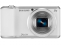
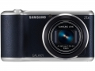
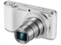
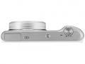
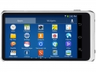

器材库 > 不可换镜头数码相机 > GALAXY Camera 2

规格总览
发布日期
2014-01-03
影像规格
影像传感器
BSI-CMOS
影像传感器尺寸
1/2.3
总像素
1700万
有效像素
1630万
静态图像尺寸
像素大小包括1600万, 1400万, 1200万（宽屏）, 1000万, 500万, 300万, 200万（宽屏）, 100万
静态图像格式
JPEG
画幅比
4:3, 16:9
短片尺寸
1920x1080 /30fps, 1280x720 /60fps, 1280x720 /30fps, 640x480 /60fps,
短片格式
MPEG4-AVC/H.264 , MP4
短片音效
AAC
防抖系统
光学防抖
镜头和对焦
焦距
4.1mm-86.1mm
最大光圈
f/2.8-f/5.9
光学变焦
21倍
曝光控制
场景模式
微距模式, 丰富色彩, 动作凝固, 瀑布轨迹, 光线轨迹,美丽夕阳,蔚蓝天空, 自然绿色, 轮廓剪影,动感烟火
ISO感光度
100, 200, 400, 800, 1600, 3200, 自动
白平衡
自动
自拍
10秒, 2秒
闪光灯
内置闪光灯
弹出式
取景规格
LCD类型
HD Super Clear LCD
LCD尺寸
4.8英寸
LCD特性
触摸屏
文件输入/输出
内置存储容量
8GB
存储卡
microSDHC, microSDXC
数据接口
USB2.0
视频/音频接口
HDMI 输出
无线功能
Wi-Fi
电源
电池
Li-on 2000mAh
外观
颜色
白色, 蓝色
尺寸
132.5 x 71.2 x 19.3mm
重量
283g
其它
GPS
有
备注
1.6GHz 四核处理器,安卓4.2果冻豆操作系统
该产品暂无存档的网友点评
产品图 / 样片



